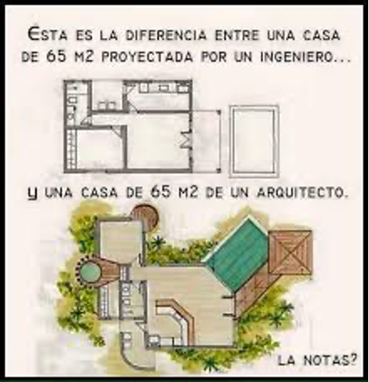
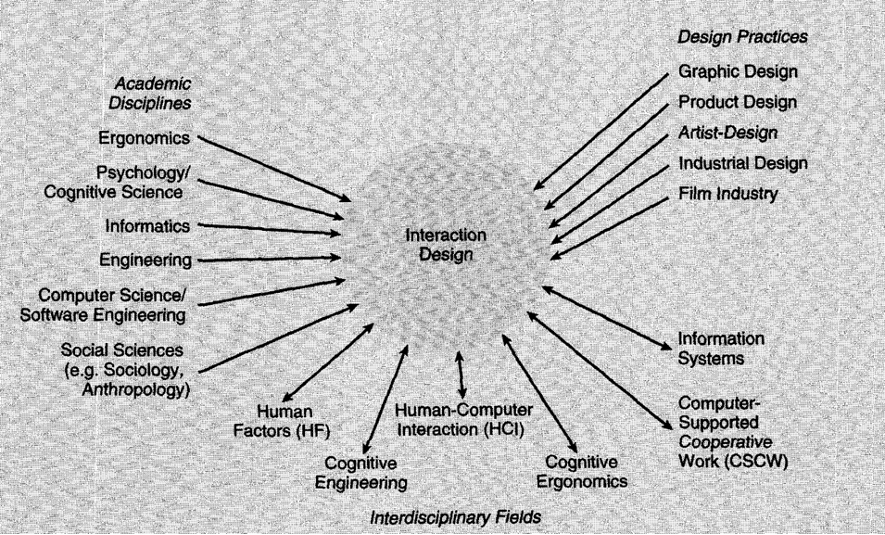

¿Qué es el Diseño de la Interacción?
Preece et. al. Definen al diseño de Interacción (IxD) como el “Diseño de productos interactivos para apoyar a las personas en sus actividades diarias” (Preece, Rogers, & Sharp, 2015). Sin embargo, una definición más simple y que la acogemos en este curso es la descrita por Interaction Design Foundation (Interaction Design Foundation, n.d.):
“El Diseño de la Interacción es diseñar la interacción entre usuarios y productos”
Objetivo del Diseño de Interacción
Los objetivos primarios y de alto nivel de la IxD son:
- Diseñar un producto eficiente que permita a los usuarios ser altamente productivos en su trabajo
- Diseñar un sistema que sea desafiante y motivante de tal manera que soporte el aprendizaje efectivo
Estos dos objetivos tienen que ver con los objetivos de la Usabilidad (objetivo 1) y la UX (objetivo 2). En este sentido, a la hora de abordar un proyecto de diseñar la interacción es importante considerar cuales son los objetivos de usabilidad y experiencia de usuario de los usuarios del producto.
La diferencia del IxD con otras disciplinas
A diferencia de la Ingeniería de Software que se enfoca en la tecnología y en cómo producir Software, la IxD pone principal atención en conocer a los usuarios que utilizarán un producto. Esto incluye conocer las características de las personas, sus objetivos, preferencias, las tareas que realizan, los dispositivos que usan, sus descontentos y emociones.
Preece describe una analogía en el campo de la construcción para explicar el ámbito de la IxD. En el campo de la construcción, Arquitectos e Ingenieros Civiles tienen diferentes formas de abordar el problema de construir una casa. Mientras el Arquitecto se preocupa de la interacción de las personas con la casa (por ejemplo, la cantidad de luz que entra en los dormitorios, la orientación de la casa respecto a la salida del sol, la proximidad entre la cocina y el comedor, etc.), los Ingenieros Civiles se preocupan de los detalles técnicos de la construcción (costos, cálculo estructural, métodos de construcción, número de cimientos para soportar la estructura, etc.). En este ejemplo, el Diseñador de Interacción sería análogo al Arquitecto.

Créditos: Pinterest
¿Quién está involucrado en el proceso de diseño de Interacción?
En los inicios de la computación, los ingenieros estaban enfocados en crear el hardware y software para su uso particular. Con la universalización del uso de los computadores, personas de diferentes partes del mundo y con diferentes características pudieron acceder a computadores. Es cuando surgió la necesidad de estudiar la cognición de las personas, sus características y necesidades para mejorar la interacción con los computadores. De aquí emerge el Diseño de la Interacción.
Diseñar la interacción es un esfuerzo multidisciplinar. El diseño de la interacción puede considerar como la evolución del HCI y como tal requiere de la colaboración de varias disciplinas tales como el Diseño Gráfico, Antropología, Ingeniería de Software, Psicología, Ergonomía, Sistemas de Información, Factores Humanos, Ingeniería Cognitiva, entre otras.

Créditos: (Preece et al., 2015)
¿Qué involucra el proceso del Diseño de Interacción?
El proceso de Diseño de Interacción involucra un proceso iterativo de cuatro (4) actividades:
- Identificar las necesidades de los usuarios. - Identificar los objetivos de usabilidad y experiencia de usuario de los potenciales usuarios del producto. Esto incluye conocer de los usuarios sus objetivos, tareas, preferencias, etc. Es una labor de investigación de del usuario.
- Desarrollar alternativas de solución. - Es un proceso creativo para idear soluciones ajustadas a las características y necesidades de los usuarios.
- Construir versiones interactivas de la solución. - Plasmar las ideas de la solución en un instrumento tangible que permite interacción del usuario.
- Evaluar la solución. - Evaluar la interacción usuario-producto y obtener retroalimentación para mejorar el producto con el fin de obtener un producto usable.
Bibliografía
Interaction Design Foundation. (n.d.). What is Interaction Design?
Preece, J., Rogers, Y., & Sharp, H. (2015). Interaction design: beyond human-computer interaction (4th ed.; John Wiley & Sons Inc, Ed.).